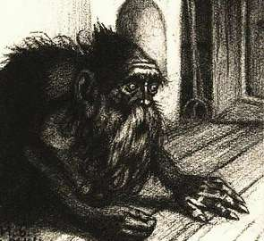

31 ФЕВРАЛЯ
САМЫЙ ЧЕРНЫЙ ДЕНЬ В ГОДУ
Сегодня не день, а черная дыра. Природа устроила так, что в этих 24 часах аккумулированы все худшие несчастья, которые только могут с вами случиться.
Не выходите на улицу — вас собьет машина или на голову свалится сосулька.
Не выходите из квартиры — поскользнетесь на лестнице и свернете себе шею.
Не выходите из комнаты — в коридоре может притаиться бабайка.
Или даже юрэй.
А самое лучшее вообще не вылезайте из кровати, чтобы по случайности не встать на неправильную ногу. И не открывайте глаз — мало ли что они могут увидеть.
Что можно сегодня делать:
— Бояться.
— Молиться и каяться.
— Ждать весны.
Она торопится к вам, она придет уже завтра.